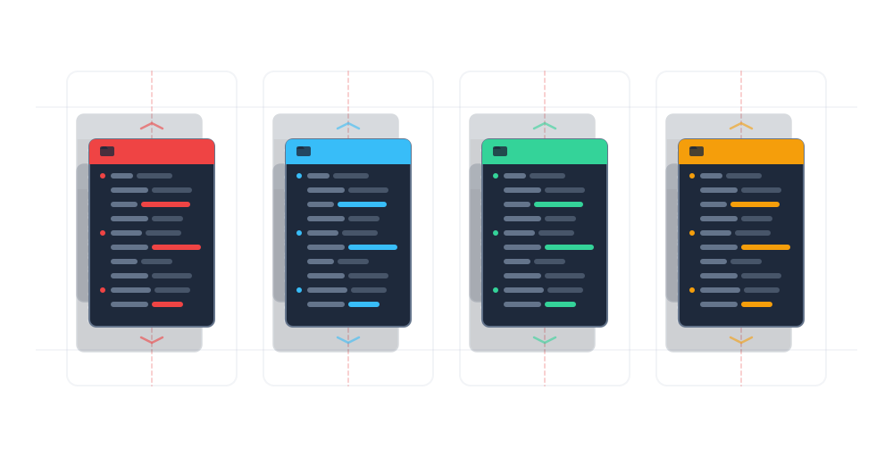
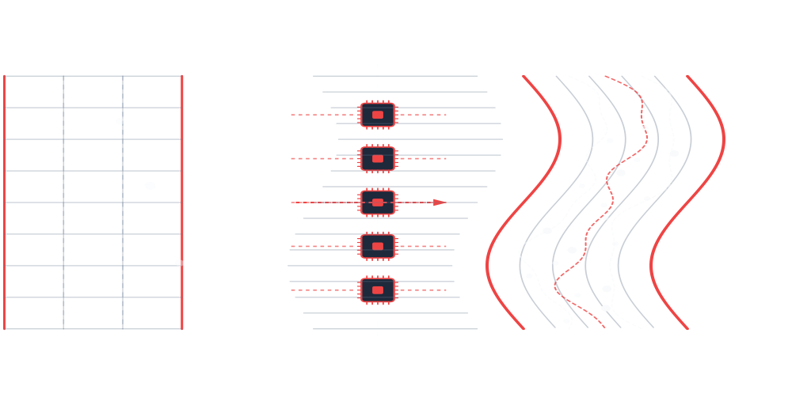

1Coupled
Interpolate and project fields between curvilinear grids and tracking particles.
|
PICurv 0.1.0
A Parallel Particle-In-Cell Solver for Curvilinear LES
|

|
 Interpolate and project fields between curvilinear grids and tracking particles.  Compose and swap physics,solvers, data acquisition and analysis pipelines.  Scale and resolve simulations by deploying massive grids and millions of particles.
Fast,Modern and robust C/C++ software for simulating incompressible fluid dynamics and particle transport in complex, curved domains.
Coupled
Configurable
Scalable
Deep, transparent documentation for building cases, understanding the numerics, and extending the solver.
case.yml, solver.yml, monitor.yml, and post.yml profiles.
Methods and NumericsEulerian-Lagrangian finite-volume methods and their runtime implementations.
Equations and Particle ModelsIncompressible flow, projection, stochastic transport, and particle coupling.
C/C++ API ReferenceDoxygen-generated structures, persistent fields, descriptors, and core routines.
Follow solver work, propose changes, and inspect the verification gates behind PICurv.
Track the code and the evidence used to support its documented behavior.
View repositoryGitHub Discussions is not currently enabled; use Issues for scientific and workflow questions.
Ask about a first curvilinear simulation, report a boundary-condition defect, or start a research collaboration.
For bugs, numerical questions, missing documentation, and reproducible feature requests.
Open an issueFor a concrete code, verification, workflow, or documentation contribution.
Open a pull requestConnect with the Scientific Computing and Biofluids Lab at Texas A&M.
Selected presentations describing the PICurv solver and related high-resolution biofluid applications.
Please cite the primary solver presentation when PICurv supports your research, teaching, or modeling.
Kandala, V. I., and Borazjani, I. (2025). “A Parallel Particle-In-Cell (PIC) Solver on Curvilinear Grids for Turbulent Flow Simulation.” Presented at the 78th Annual Meeting of the APS Division of Fluid Dynamics, Houston, Texas.
PICurv is developed by Vishal Kandala.